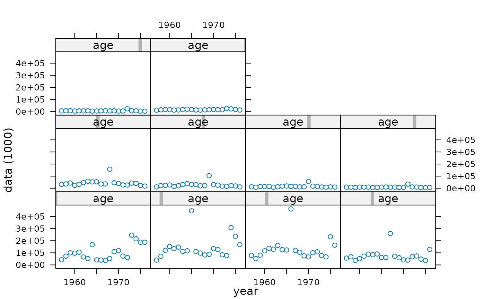
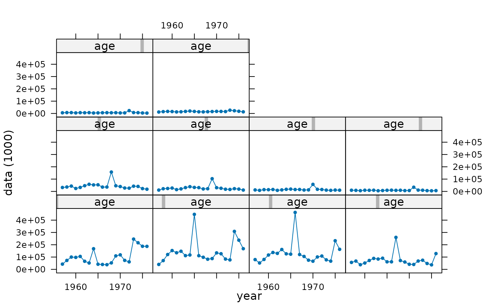
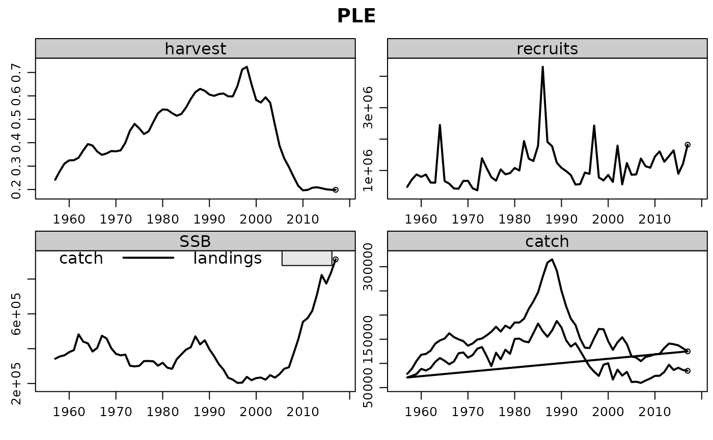
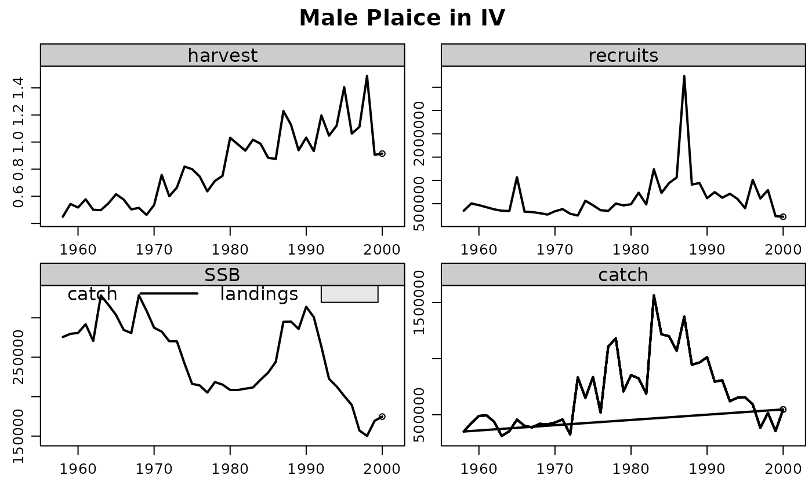
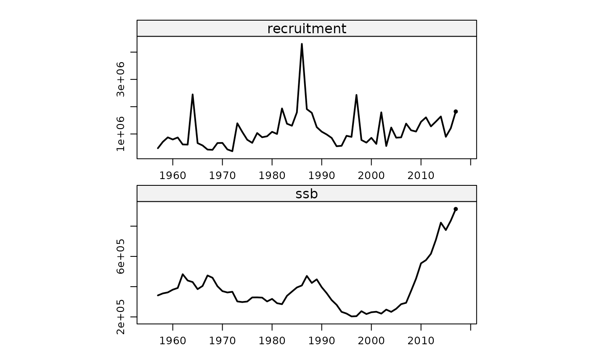
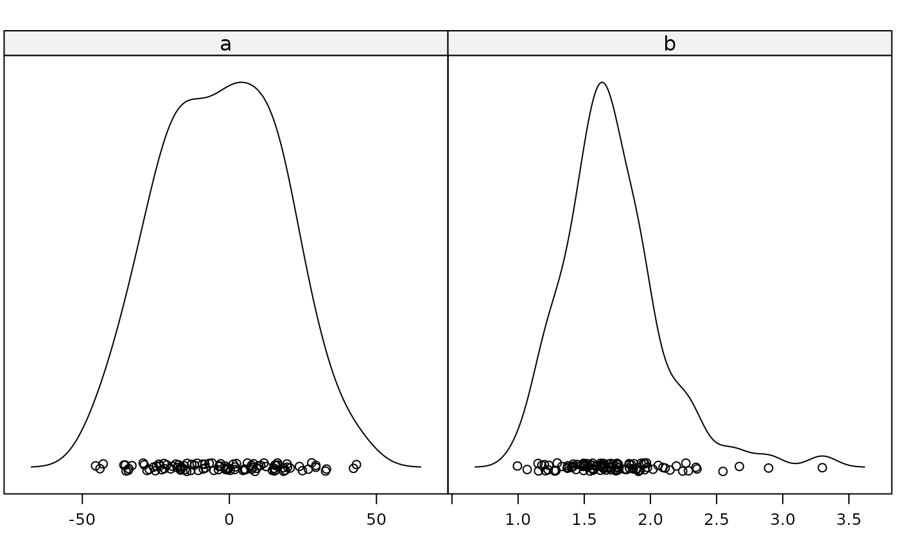

Method plot
plot.RdStandard plot methods for every FLCore class. FLR plot methods are based on
lattice, and attempt to show a general view of the
object contents.
# S4 method for FLQuant,missing plot(x, xlab = "year", ylab = paste("data (", units(x), ")", sep = ""), type = "p", ...) # S4 method for FLStock,missing plot(x, auto.key = TRUE, ...) # S4 method for FLBiol,missing plot(x, y, ...) # S4 method for FLIndex,missing plot(x, type = c("splom"), ...) # S4 method for FLSR,missing plot(x, main = "Functional form", log.resid = FALSE, cex = 0.8) # S4 method for FLPar,missing plot(x, y = "missing", ...)
Details
Users are encouraged to write their own plotting code and make use of the
overloaded lattice methods, for example
xyplot or bwplot. See also
lattice-FLCore.
Generic function
plot(x,y)
See also
Examples
data(ple4) # FLQuant plot(catch.n(ple4)[, 1:20])plot(catch.n(ple4)[, 1:20], type='b', pch=19, cex=0.5)# FLStock data(ple4sex) plot(ple4)plot(ple4sex)# FLBiol data(ple4.biol) plot(ple4.biol)# FLIndex data(ple4.index) plot(ple4.index)#> Warning: coercing argument of type 'double' to logical# FLSR data(nsher) plot(nsher)# FLPar fpa <- FLPar(a=rnorm(100, 1, 20), b=rlnorm(100, 0.5, 0.2)) plot(fpa)